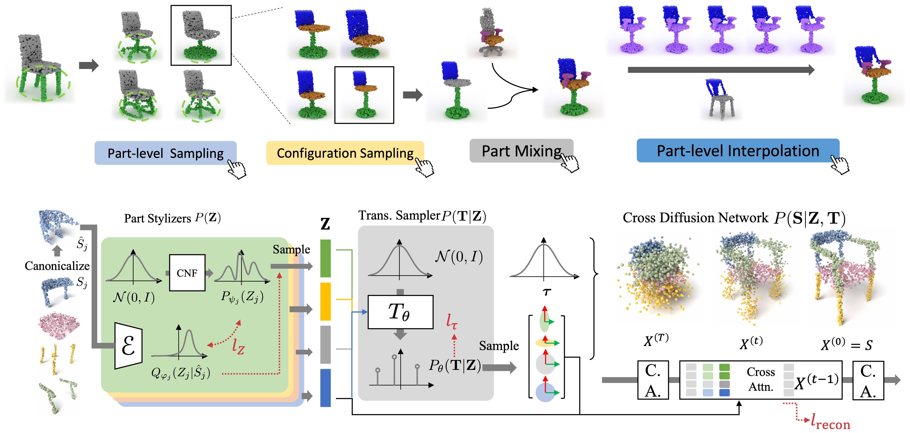
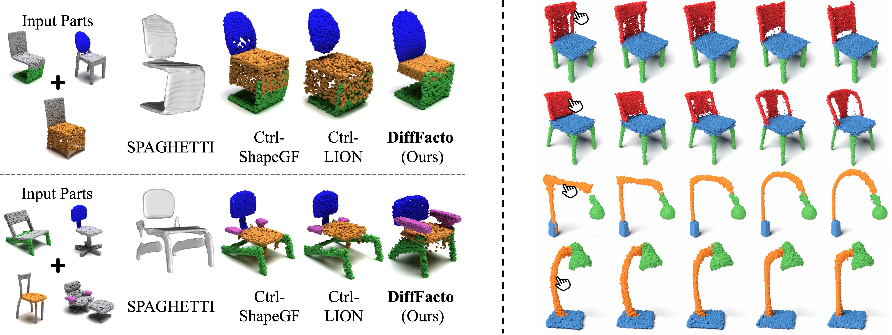
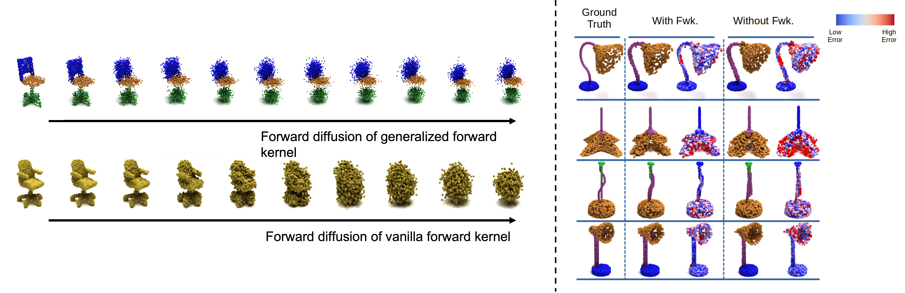

1Stanford University
2Tsinghua University 2Simon Fraser University

DiffFacto: Our approach tackles the task of controllable part-based point cloud generation, where we are able to both generate novel shapes and perform edits on user-input shapes.
An overview of our network is given at the bottom row. We factorize the 3D shape distribution into three key components: part stylizers, transformation samplers, and a cross diffusion network. For details please refer to our paper.
Abstract
While the community of 3D point cloud generation has witnessed a big growth in recent years,
there still lacks an effective way to enable intuitive user control in the generation process,
hence limiting the general utility of such methods. Since an intuitive way of decomposing a shape is through its parts,
we propose to tackle the task of controllable part-based point cloud generation.
We introduce DiffFacto, a novel probabilistic generative model that learns the distribution of shapes with part-level control.
We propose a factorization that models independent part style and part configuration distributions, and present a novel cross diffusion network that enables us to generate coherent and plausible shapes under our proposed factorization.
Experiments show that our method is able to generate novel shapes with multiple axes of control. It generates plausible and coherent shape, while enabling various downstream editing applications such as shape interpolation, mixing and transformation editing.
Generated Shapes with Controlled Variation:Left: Re-sampling a selected part style while keeping the rest fixed.
Middle: Fixing a selected part while re-sampling the rest.
Right: Generating multiple part configurations for a given set of part styles. Gray refers to the fixed part while colored parts are being modified.

Applications:Left: Part Style Mixing. The colored parts from the left are selected and mixed to provide the shapes on the right.
Right: Part Interpolation. We interpolate the chair backs (red) in the first 2 rows and the lamp poles (orange) in the last 2 rows (indicated by the hand icons).

Left: Visualization of the forward diffusion process with our generalized forward kernel. Compared to the forward diffusion of the vanilla diffusion (bottom row, taken from PVD) that drifts all points uniformly towards the unit Gaussian, our generalized forward kernel diffuses points towards different Gaussains based on the part configurations.
Right: Examples of lamp reconstruction with our generalized forward kernel (With Fwk.) versus without the generalized kernel formulation (Without Fwk.). Heat maps showing relative errors in the reconstruction lamps. Red indicates larger differences.
Acknowledgements
This work is supported by ARL grant W911NF-21-2-0104, a Vannevar Bush Faculty Fellowship, the Natural Science Foundation of China (Project No. 62220106003), Tsinghua-Tencent Joint Laboratory for Internet Innovation Technology, and the Natural Sciences and Engineering Research Council of Canada. We very much appreciate Congyue Deng for her helpful discussion at the early stage of this project. We are also grateful for the advice and help from Colton Stearns and Davis Rempe.